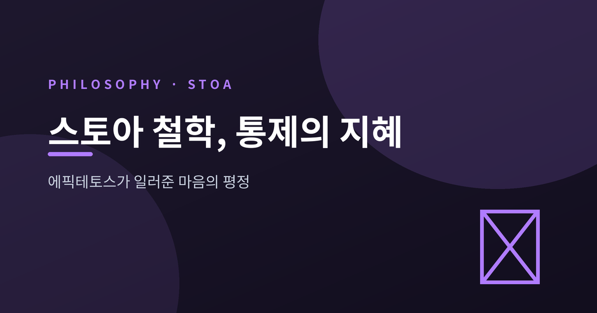
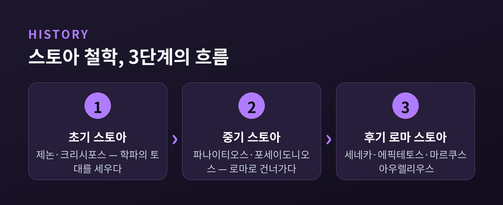
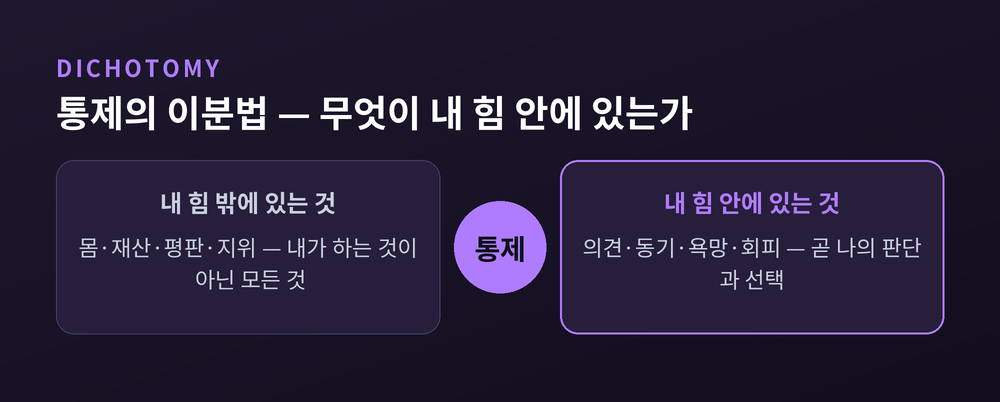
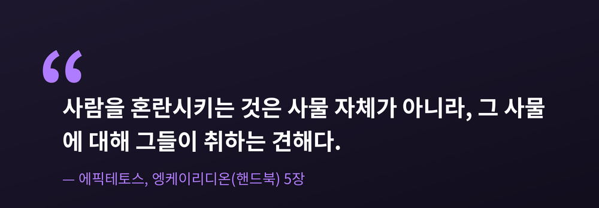

에픽테토스가 일러준 마음의 평정

오늘은 스토아 철학을 이야기해 보려 합니다. 그중에서도 노예로 태어난 철학자 에픽테토스가 남긴 한 가지 구분, 곧 통제할 수 있는 것과 없는 것을 나누는 지혜를 중심에 두겠습니다. 불안이 흔해진 시대에 이 오래된 가르침이 왜 다시 읽히는지, 그리고 어디까지 받아들일 만한지 함께 짚어보겠습니다.
스토아 학파는 키프로스 키티온 출신의 제논이 기원전 약 300년경 아테네에서 창시했습니다.
제논은 원래 상인이었습니다. 난파 사고를 겪은 뒤 아테네에서 철학에 입문했다고 전해집니다.
'스토아'라는 이름은 거창한 데서 온 것이 아닙니다. 제자들이 모여 토론하던 아고라 북쪽의 회랑, 스토아 포이킬레(채색된 주랑)에서 따왔습니다.
이 학파는 철학을 물리학, 논리학, 윤리학 세 부분으로 나누어 보았습니다. 그중 윤리학의 핵심은 분명합니다. 덕이 최고선이며, 목표는 "자연에 따라 사는 것"입니다.

에픽테토스는 약 50년에서 135년을 산 그리스 철학자입니다.
그는 노예로 태어났습니다. 프리기아의 히에라폴리스에서 났고, 도미티아누스 황제의 비서였던 에파프로디토스의 노예였습니다.
본명은 알려져 있지 않습니다. '에픽테토스'는 그리스어로 "획득된"이라는 뜻의 단어입니다.
소년 시절 노예였음에도 그는 스토아 철학자 무소니우스 루푸스의 강의를 들을 수 있었습니다. 이후 해방되어 자유민이 되었습니다.
한 가지 더 짚을 점이 있습니다. 에픽테토스는 평생 다리를 절었고 병약하게 살았습니다. 통제 밖의 조건을 누구보다 일찍 안고 산 사람이 통제의 철학을 남긴 셈입니다.
그는 아무것도 직접 쓰지 않았습니다. 그의 강의는 제자 아리아노스가 기록했습니다. 핵심을 압축한 요약본이 바로 『엥케이리디온』, 곧 "핸드북"입니다.
『엥케이리디온』은 이렇게 시작합니다.
"어떤 것들은 우리의 힘 안에 있고, 어떤 것들은 그렇지 않다."
내 힘 안에 있는 것은 의견, 동기, 욕망, 회피입니다. 한마디로 내가 하는 모든 것입니다.
내 힘 안에 있지 않은 것은 몸, 재산, 평판, 지위입니다. 한마디로 내가 하는 것이 아닌 모든 것입니다.
이 구분은 마법 같은 약속이 아닙니다. 인과에 관한 담담한 관찰입니다. 내 판단과 선택은 내 안에서 비롯되지만, 평판과 결과는 나를 전혀 모르는 힘들이 함께 만듭니다.
예전에는 통제할 수 없는 것을 붙들고 애를 썼습니다. 지금은 그쪽을 내려놓고 판단과 선택에 힘을 모읍니다. 이 작은 방향 전환이 평정의 출발점이라고 에픽테토스는 보았습니다.

여기서 흔한 오해를 짚고 싶습니다.
스토아의 이상을 두고 사람들은 종종 "감정을 억누르는 것"이라 여깁니다. 그러나 스토아주의자들은 감정을 억압하지 않습니다.
그들이 다스리려 한 것은 거짓 판단에 기댄 파괴적 정념입니다. 건강한 감정은 오히려 길러냅니다.
전환의 방향도 분명합니다. 두려움은 신중함으로, 쾌락은 기쁨으로 옮겨 갑니다. 무감각이 목표가 아니라, 이성에 의한 정념의 조율이 목표입니다.
스토아가 가리키는 평온한 상태에는 이름이 있습니다. 비이성적 정념에서 벗어난 상태를 아파테이아, 그 결과로 찾아오는 흔들리지 않는 고요를 아타락시아라고 부릅니다. 이 모두가 향하는 최종 지점이 자연에 따라 사는 삶, 곧 에우다이모니아입니다.
에픽테토스의 가장 유명한 문장은 5장에 있습니다.
"사람을 혼란시키는 것은 사물 자체가 아니라, 그 사물에 대해 그들이 취하는 견해다."
그는 같은 장에서 죽음을 예로 듭니다. 죽음 자체가 두려운 것이 아니라, 죽음을 두렵다고 보는 우리의 관념이 혼란을 일으킨다는 것입니다.
이 한 문장은 먼 후대에 다시 살아납니다. 심리치료사들은 1950년대부터 앨버트 엘리스의 저술을 통해 스토아 철학을 재발견했습니다. 그렇게 나온 것이 합리적 정서행동치료, 곧 REBT이며 현대 인지행동치료(CBT)의 주된 선구입니다.
엘리스는 정서적 문제가 외부 사건이 아니라 그 사건에 대한 비합리적 신념에서 비롯된다고 보았습니다. 그는 내담자들에게 바로 그 5장의 구절을 보여주며 가르쳤습니다.
통제의 이분법과 정확히 맞물리는 대목입니다. 통제 가능한 '판단'을 점검하면, 정서도 다스릴 수 있습니다.

이 철학을 한쪽으로만 떠받들고 싶지는 않습니다. 비판도 분명히 있기 때문입니다.
첫째는 감정 억압의 위험입니다. 초연함의 강조가 건강한 조절이 아니라 억압으로 흐를 수 있습니다. 한 암 환자 대상 연구에서는 '참고 견디기'식 태도가 감정 억압과 도움 요청 지연, 더 나쁜 심리적 결과와 연관되었다고 보고합니다. 다만 이는 정통 교리라기보다 그 왜곡된 형태에 가깝습니다.
둘째는 수동성 비판입니다. 사건을 있는 그대로 받아들이는 태도가 불의 앞에서 무행동으로 이어질 수 있다는 지적입니다.
셋째는 회색지대의 문제입니다. 통제할 수는 없지만 영향은 줄 수 있는 일들을, 단순한 이분법이 놓치는 듯 보입니다.
완벽한 철학은 아닙니다. 다만 비판의 상당수는 정통 스토아가 아니라 그 거친 흉내를 겨냥한다는 점도 함께 기억할 만합니다.
끝으로 한 마디만 더 드리겠습니다.
이 철학의 알맹이는 한 줄로 줄일 수 있습니다 — "바꿀 수 없는 것은 받아들이고, 바꿀 수 있는 것에 마음을 모은다."
다리를 절며 살았던 한 사람이 노예의 자리에서 길어 올린 말입니다. 오늘 내 손 안에 있는 것이 무엇인지 묻는다면, 그 물음 자체가 이미 평정의 첫걸음일지 모릅니다.